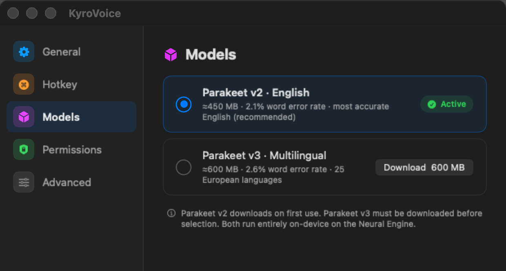
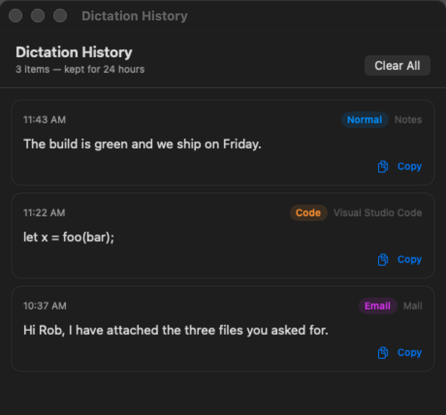

The app

Two models. English is on by default.
Downloaded once, then it works offline.
How
Press starts it, release ends it.
HotkeyManagerMicrophone audio at 16 kHz.
AudioRecorderParakeet TDT on the Neural Engine.
SpeechEngineRules clean it up for the app you are in.
TextProcessorPasted at the cursor, clipboard restored.
ClipboardInjectorModes
History

Privacy
Install
$ git clone https://github.com/sanonrickny/KyroVoice.git $ cd KyroVoice $ ./setup_deps.sh # once $ make install